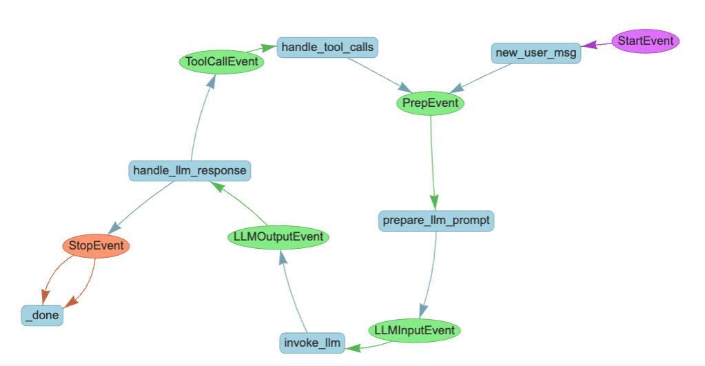
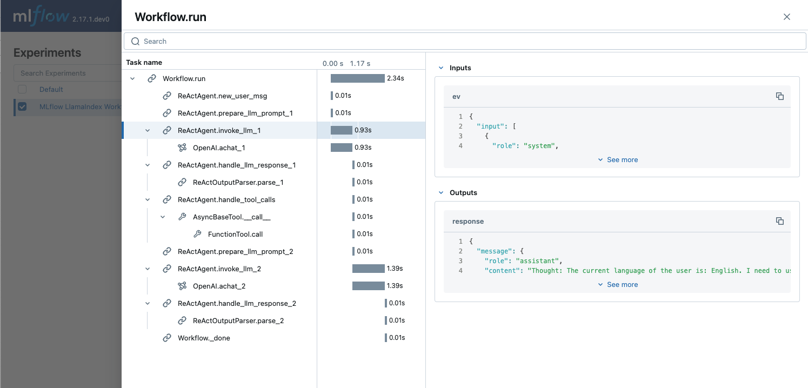
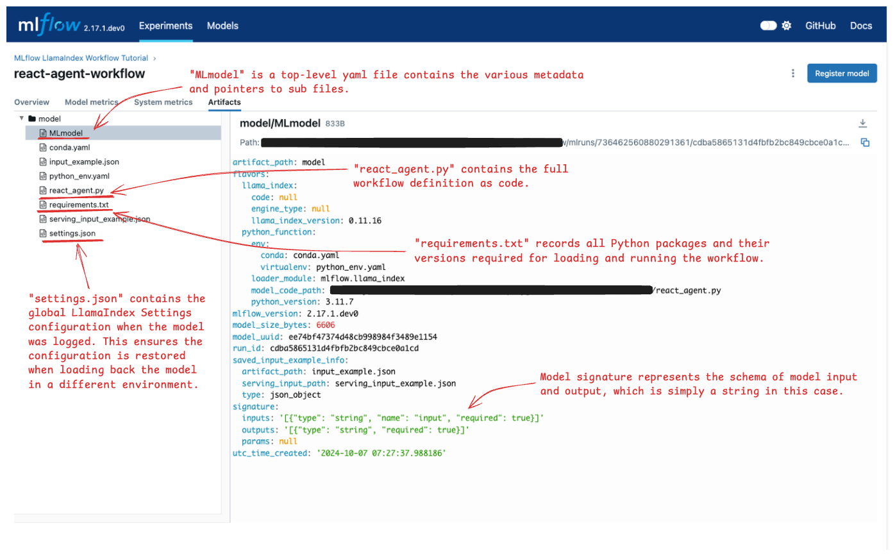

Building a Tool-calling Agent with LlamaIndex Workflow and MLflow
Welcome to this interactive tutorial designed to introduce you to LlamaIndex Workflow and its integration with MLflow. This tutorial is structured as a notebook to provide a hands-on, practical learning experience with Workflow, LlamaIndex’s novel approach to design LLM applications, and managing the development process with MLflow.

What you will learn
By the end of this tutorial you will have:
Created an MVP agentic application with tool calling functionality in a LlamaIndex Workflow.
Observed the agent actions with MLflow Tracing.
Logged that workflow to the MLflow Experiment.
Loaded the model back and performed inference.
Explored the MLflow UI to learn about logged artifacts.
Installation
MLflow’s integration with LlamaIndex’s Workflow API is available in MLflow >= 2.17.0 and LlamaIndex (core) >= 0.11.16. After installing the packages, you may need to restart the Python kernel to correctly load modules.
[ ]:
%pip install mlflow>=2.17.0 llama-index>=0.11.16 -qqqU
# Workflow util is required for rendering Workflow as HTML
%pip install llama-index-utils-workflow -qqqU
Choose your favorite LLM
By default, LlamaIndex uses OpenAI as the source for LLms and embedding models. If you are signing up with different LLM providers or using a local model, configure them for use by using the Settings object.
Option 1: OpenAI (default)
LlamaIndex by default uses OpenAI APIs for LLMs and embeddings models. To proceed with this setting, you just need to set the API key in the environment variable.
[1]:
import os
os.environ["OPENAI_API_KEY"] = "<YOUR_OPENAI_API_KEY>"
Option 2: Other Hosted LLMs
If you want to use other hosted LLMs,
Download the integration package for the model provider of your choice.
Set up required environment variables as specified in the integration documentation.
Instantiate the LLM instance and set it to the global
Settingsobject.
The following cells show an example for using Databricks hosted LLMs (Llama3.1 70B instruct).
[ ]:
%pip install llama-index-llms-databricks
[ ]:
import os
os.environ["DATABRICKS_TOKEN"] = "<YOUR_DATABRICKS_API_TOKEN>"
os.environ["DATABRICKS_SERVING_ENDPOINT"] = "https://YOUR_DATABRICKS_HOST/serving-endpoints/"
[ ]:
from llama_index.core import Settings
from llama_index.llms.databricks import Databricks
llm = Databricks(model="databricks-meta-llama-3-1-70b-instruct")
Settings.llm = llm
Option 3: Local LLM
LlamaIndex also support locally hosted LLMs. Please refer to the Starter Tutorial (Local Models) for how to set them up.
Create an MLflow Experiemnt
Skip this step if you are running this tutorial on a Databricks Notebook. An MLflow experiment is automatically set up when you created any notebook.
[ ]:
import mlflow
mlflow.set_experiment("MLflow LlamaIndex Workflow Tutorial")
Define tools
The agents access with various functions and resources via tool objects. In this example, we define the simplest possible math tools add and multiply based on Python functions. For a real-world application, you can create arbitrary tools such as vector search retrieval, web search, or even calling another agent as a tool. Please refer to the Tools documentation for more details.
Please ignore the ### [USE IN MODEL] comment at the beginning of some cells like below. This will be used in later steps in this tutorial!
[3]:
# [USE IN MODEL]
from llama_index.core.tools import FunctionTool
def add(x: int, y: int) -> int:
"""Useful function to add two numbers."""
return x + y
def multiply(x: int, y: int) -> int:
"""Useful function to multiply two numbers."""
return x * y
tools = [
FunctionTool.from_defaults(add),
FunctionTool.from_defaults(multiply),
]
Define Workflow
Workflow Primer
LlamaIndex Workflow is an event-driven orchestration framework. At its core, a workflow consists of two fundamental components: Steps and Events.
Steps: Units of execution within the workflow. Steps are defined as methods marked with the
@stepdecorator in a class that implements theWorkflowbase class.Events: Custom objects that trigger steps. Two special events,
StartEventandEndEvent, are reserved for dispatch at the beginning and end of the workflow.
Each step specifies its input and output events through its function signature.
@step
async def my_step(self, event: StartEvent) -> FooEvent:
# This method triggers when a StartEvent is emitted at the workflow's start,
# and then dispatches a FooEvent.
Based on each step’s signature and defined events, LlamaIndex automatically constructs the workflow’s execution flow.
You may notice that the my_step function is defined as an async function. LlamaIndex Workflow makes asynchronous operations a first-class feature, enabling easy parallel execution and scalable workflows.
Another essential component of the workflow is the Context object. This global registry, accessible from any step, allows shared information to be defined without the need to pass it through multiple events.
Define a ReAct Agent as a Workflow
The Workflow definition below models a ReAct Agent that utilizes the simple math tools we defined.
[4]:
# [USE IN MODEL]
# Event definitions
from llama_index.core.llms import ChatMessage, ChatResponse
from llama_index.core.tools import ToolOutput, ToolSelection
from llama_index.core.workflow import Event
class PrepEvent(Event):
"""An event to handle new messages and prepare the chat history"""
class LLMInputEvent(Event):
"""An event to prmopt the LLM with the react prompt (chat history)"""
input: list[ChatMessage]
class LLMOutputEvent(Event):
"""An event represents LLM generation"""
response: ChatResponse
class ToolCallEvent(Event):
"""An event to trigger tool calls, if any"""
tool_calls: list[ToolSelection]
class ToolOutputEvent(Event):
"""An event to handle the results of tool calls, if any"""
output: ToolOutput
[15]:
# [USE IN MODEL]
# Workflow definition
from llama_index.core import Settings
from llama_index.core.agent.react import ReActChatFormatter, ReActOutputParser
from llama_index.core.agent.react.types import ActionReasoningStep, ObservationReasoningStep
from llama_index.core.memory import ChatMemoryBuffer
from llama_index.core.workflow import (
Context,
StartEvent,
StopEvent,
Workflow,
step,
)
class ReActAgent(Workflow):
def __init__(self, *args, **kwargs):
super().__init__(*args, **kwargs)
self.tools = tools
# Store the chat history in memory so the agent can handle multiple interactions with users.
self.memory = ChatMemoryBuffer.from_defaults(llm=Settings.llm)
@step
async def new_user_msg(self, ctx: Context, ev: StartEvent) -> PrepEvent:
"""Start workflow with the new user messsage"""
# StartEvent carries whatever keys passed to the workflow's run() method as attributes.
user_input = ev.input
user_msg = ChatMessage(role="user", content=user_input)
self.memory.put(user_msg)
# We store the executed reasoning steps in the context. Clear it at the start.
await ctx.set("steps", [])
return PrepEvent()
@step
async def prepare_llm_prompt(self, ctx: Context, ev: PrepEvent) -> LLMInputEvent:
"""Prepares the react prompt, using the chat history, tools, and current reasoning (if any)"""
steps = await ctx.get("steps", default=[])
chat_history = self.memory.get()
# Construct an LLM from the chat history, tools, and current reasoning, using the
# built-in prompt template.
llm_input = ReActChatFormatter().format(self.tools, chat_history, current_reasoning=steps)
return LLMInputEvent(input=llm_input)
@step
async def invoke_llm(self, ev: LLMInputEvent) -> LLMOutputEvent:
"""Call the LLM with the react prompt"""
response = await Settings.llm.achat(ev.input)
return LLMOutputEvent(response=response)
@step
async def handle_llm_response(
self, ctx: Context, ev: LLMOutputEvent
) -> ToolCallEvent | PrepEvent | StopEvent:
"""
Parse the LLM response to extract any tool calls requested.
If theere is no tool call, we can stop and emit a StopEvent. Otherwise, we emit a ToolCallEvent to handle tool calls.
"""
try:
step = ReActOutputParser().parse(ev.response.message.content)
(await ctx.get("steps", default=[])).append(step)
if step.is_done:
# No additional tool call is required. Ending the workflow by emitting StopEvent.
return StopEvent(result=step.response)
elif isinstance(step, ActionReasoningStep):
# Tool calls are returned from LLM, trigger the tool call event.
return ToolCallEvent(
tool_calls=[
ToolSelection(
tool_id="fake",
tool_name=step.action,
tool_kwargs=step.action_input,
)
]
)
except Exception as e:
error_step = ObservationReasoningStep(
observation=f"There was an error in parsing my reasoning: {e}"
)
(await ctx.get("steps", default=[])).append(error_step)
# if no tool calls or final response, iterate again
return PrepEvent()
@step
async def handle_tool_calls(self, ctx: Context, ev: ToolCallEvent) -> PrepEvent:
"""
Safely calls tools with error handling, adding the tool outputs to the current reasoning. Then, by emitting a PrepEvent, we loop around for another round of ReAct prompting and parsing.
"""
tool_calls = ev.tool_calls
tools_by_name = {tool.metadata.get_name(): tool for tool in self.tools}
# call tools -- safely!
for tool_call in tool_calls:
if tool := tools_by_name.get(tool_call.tool_name):
try:
tool_output = tool(**tool_call.tool_kwargs)
step = ObservationReasoningStep(observation=tool_output.content)
except Exception as e:
step = ObservationReasoningStep(
observation=f"Error calling tool {tool.metadata.get_name()}: {e}"
)
else:
step = ObservationReasoningStep(
observation=f"Tool {tool_call.tool_name} does not exist"
)
(await ctx.get("steps", default=[])).append(step)
# prep the next iteration
return PrepEvent()
Check the Workflow Visually
Before instantiating the agent object, let’s pause and validate if the workflow is constructed as we expect.
To check that, we can render the graphical representation of the workflow by using the draw_all_possible_flows utility function.
(Note: If the rendered HTML is blank, it might be due to the safety feature in Jupyter. In that case, you can trust the notebook by !jupyter trust llama_index_workflow_tutorial.ipynb. See Jupyter documentation for more details.)
[ ]:
from IPython.display import HTML
from llama_index.utils.workflow import draw_all_possible_flows
draw_all_possible_flows(ReActAgent, filename="workflow.html")
with open("workflow.html") as file:
html_content = file.read()
HTML(html_content)
[17]:
# [USE IN MODEL]
agent = ReActAgent(timeout=180)
Run the Workflow (with Trace)
Now your workflow is all set! But before running that, let’s not forget to turn on MLflow Tracing, so you get observability into each step during the agent run, and record it for the review later.
Mlflow supports automatic tracing for LlamaIndex Workflow. To enable it, you just need to call the mlflow.llama_index.autolog() function.
[12]:
import mlflow
mlflow.llama_index.autolog()
[18]:
# Run the workflow
await agent.run(input="What is (123 + 456) * 789?")
[18]:
'The result of (123 + 456) * 789 is 579,027.'
Review the Trace
The generated traces are automatically recorded to your MLflow Experiment.
Open a terminal, run
mlflow ui --port 5000within the current directory (and keep it running).Navigate to
http://127.0.0.1:5000in your browser.Open the experiment “MLflow LlamaIndex Workflow Tutorial”.
Navigate to the “Trace” tab below the experiment name header.

The Trace records the individual steps inside the workflow execution with its inputs, outputs, and additional metadata such as latency. Let’s do a quick exercise to find the following information on the Trace UI.
Token count used for the first LLM invocation
Token count used for the first LLM invocation
<p>You can find token counts for LLm call in the <strong>Attribtues</strong> section of the LLM call span, inside the <code>usage</code> field.</p>
Input numbers for the “add” tool call.
Input numbers for the “add” tool call.
You can find input numbers x=123 and y=456 in the Inputs field of the span named FunctionTool.call. That span is located under the ReActAgent.handle_tool_calls step span.
Log the Workflow to an MLflow Experiment
Now that you’ve built your first ReAct Agent using LlamaIndex Workflow, it’s essential to iteratively refine and optimize for better performance. An MLflow Experiment is the ideal place to record and manage these improvements
Prepare a Model script
MLflow supports logging LlamaIndex workflows using the Models from Code method, allowing models to be defined and logged directly from a standalone Python script. This approach bypasses the need for risky and brittle serialization methods like pickle, using code as the single source of truth for the model definition. Combined with MLflow’s environment-freezing capability, this provides a reliable way to persist the model.
For more details, see the MLflow documentation.
You could manually create a separate Python file by copying the code from this notebook. However, for convenience, we define a utility function to generate a model script automatically from this notebook’s content in one step. Running the cell below will create this script in the current directory, ready for MLflow logging.
[22]:
def generate_model_script(output_path, notebook_path="llama_index_workflow_tutorial.ipynb"):
"""
A utility function to generate a ready-to-log .py script that
contains necessary library imports and model definitions.
Args:
output_path: The path to write the .py file to.
notebook_path: The path to the tutorial notebook.
"""
import nbformat
with open(notebook_path, encoding="utf-8") as f:
notebook = nbformat.read(f, as_version=4)
# Filter cells that are code cells and contain the specified marker
merged_code = (
"\n\n".join(
[
cell.source
for cell in notebook.cells
if cell.cell_type == "code" and cell.source.startswith("# [USE IN MODEL]")
]
)
+ "\n\nimport mlflow\n\nmlflow.models.set_model(agent)"
)
# Write to the output .py file
with open(output_path, "w", encoding="utf-8") as f:
f.write(merged_code)
print(f"Model code saved to {output_path}")
# Pass `notebook_path` argument if you changed the notebook name
generate_model_script(output_path="react_agent.py")
Model code saved to react_agent.py
Logging the Model
[ ]:
import mlflow
with mlflow.start_run(run_name="react-agent-workflow"):
model_info = mlflow.llama_index.log_model(
"react_agent.py",
artifact_path="model",
# Logging with an input example help MLflow to record dependency and signature information accurately.
input_example={"input": "What is (123 + 456) * 789?"},
)
Explore the MLflow UI
Let’s open the MLflow UI again to see which information is being tracked in the experiment.
Access the MLflow UI like we did for reviewing traces.
Open the experiment “MLflow LlamaIndex Workflow Tutorial”.
The
Runstab in the experiment should contain a run named “react-agent-workflow”. Open it.On the run page, navigate to the
"Artifacts"tab.
The artifacts tab shows various files saved by MLflow in the Run. See the below image and open the annotated files to check which information is stored in each file.

Load the Model Back for Inference
With all necessary metadata logged to MLflow, you can load the model in a different notebook or deploy it for inference without concerns about environment inconsistencies. Let’s do a quick exercise to demonstrate how this helps in reproducing experiment results.
To simulate a different environment, we’ll remove the llm configuration from the global Settings object.
[24]:
from llama_index.core.llms import MockLLM
Settings.llm = MockLLM(max_tokens=1)
await agent.run(input="What is (123 + 456) * 789?")
[24]:
'text'
Since the dummy LLM is configured, the workflow could not generate the correct output but just returns “text”.
Now try loading the model back from the MLflow Experiment by calling mlflow.llama_index.load_model() API and run the workflow again.
[ ]:
loaded_model = mlflow.llama_index.load_model("runs:/f8e0a0d2dd5546d5ac93ce126358c444/model")
await loaded_model.run(input="What is (123 + 456) * 789?")
'(123 + 456) * 789 = 456831'
This time, the output is computed correctly, because MLflow automatically restores the original LLM setting at the time of logging.
Learning More
Congratulations! 🎉 You’ve successfully learned how to build a tool-calling agent using LlamaIndex Workflow and MLflow.
Continue your journey with these advanced resources:
Improve Workflow Quality: Evaluate your workflow to enhance performance with MLflow LLM Evaluation.
Deploy Your Model: Deploy your MLflow model to a serving endpoint with MLflow Deployment.
Explore More Examples: Discover additional examples of LlamaIndex Workflow in the official documentation.